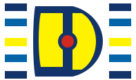

Escola Estadual Professor Abel Freire Coelho
Rua Doutor João Marcelino, s/n — Abolição, Mossoró/RN — CEP 59612-200
Portal de Biologia · projeto educacional de estudo e revisão para o Ensino Médio.
Todo o conteúdo fica salvo apenas neste dispositivo.
Nenhum dado pessoal é coletado ou enviado a servidores.